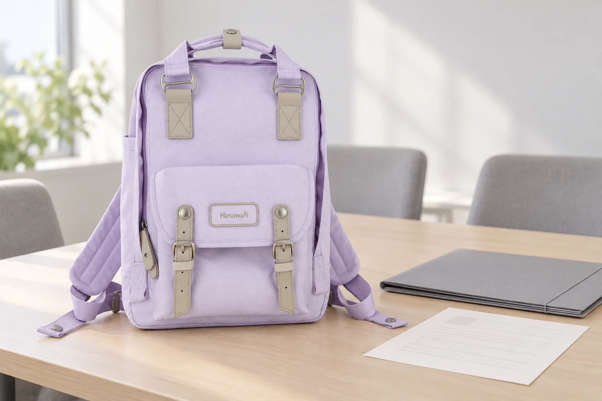

A4 파일이 들어가도 꺼내기 어려운 백팩의 입구

문서 파일이 백팩 안에 들어갔는데 회의실에서 꺼내려니 위쪽 모서리가 걸립니다. 안쪽의 넓이는 충분해 보여도 입구를 통과하는 길이 같은 넓이로 이어지지 않을 수 있습니다. 서류용 가방을 고를 때에는 파일이 마지막에 놓이는 자리와 그 자리까지 지나가는 구간을 함께 봅니다. 들어간다는 답에 넣고 꺼내는 방향까지 포함해야 실제 사용을 판단할 수 있습니다.
종이의 A4 규격과 파일의 외곽도 구별합니다. 종이를 담은 파일에는 테두리와 여밈이 더해질 수 있고, 두꺼운 자료를 넣으면 닫힌 모양도 달라집니다. 같은 A4 파일이라는 이름 아래 서로 다른 폭과 모서리가 있습니다. 가방을 고르기 전에 지금 사용하는 파일을 닫은 상태로 준비하면 어떤 입구를 비교할지 분명해집니다. 종이 크기만 알고 있는 상태에서 수납 가능 여부를 넓게 예상하지 않아도 됩니다.

가방 윗선과 파일의 모서리가 만나는 곳
Himawari No.194L의 실제 제품 사진에는 위쪽 손잡이와 정면의 넓은 몸체, 앞쪽으로 겹쳐진 주머니가 보입니다. 몸체 윗부분의 외곽은 각진 파일과 같은 직선만으로 이어지지 않습니다. 이 외관에서 어떤 입구로 파일을 넣을지 질문할 수는 있지만 실제 열리는 폭과 내부 공간은 사진 한 장으로 확인되지 않습니다. 사용할 공간이 보이는 자료나 제품 안내를 연결해 살펴봅니다.
카탈로그 외부 크기는 가로 28 × 세로 39 × 폭 15cm입니다. 파일의 가로 길이가 28cm보다 작다는 이유만으로 해당 입구에 바로 들어간다고 말할 수는 없습니다. 가장 넓은 몸체 부분과 입구의 폭이 다를 수 있고, 안쪽에 다른 구조가 놓여 있을 수 있습니다. 이 수치는 백팩 외부 규모를 비교하는 데 쓰고, 파일을 지날 공간은 별도의 조건으로 확인합니다. 세로 길이에도 같은 구분이 필요합니다.
빈 백팩에 파일 하나만 넣을 수 있다면 처음에는 천천히 입구를 지나가는 방향을 봅니다. 파일 한쪽 모서리부터 비스듬히 들어가야 하는지, 가방의 두 면을 어느 정도 벌려야 하는지 살펴봅니다. 파일을 구부리거나 지퍼를 끝까지 당겨 공간을 만들려 하지 않습니다. 이때 편한 방향이 있더라도 실제 짐을 더한 뒤 같은 동작이 가능한지는 다음 비교로 남깁니다. 입구 주변의 여유는 내용물에 영향을 받을 수 있습니다.
안쪽에서 파일을 돌려야 하는 배치
파일을 세워 둔 모습이 마음에 들어도 그 자세로 바로 꺼낼 수 있는지 봅니다. 안쪽에서 한 번 기울여야 입구를 통과한다면 옆에 둔 파우치와 책이 그 회전을 막을 수 있습니다. 가방 안에 들어가 있는 한 장면에서는 보이지 않던 문제입니다. 주변 짐을 잠깐 옮기는 방식으로 사용할지, 파일을 더 곧게 꺼낼 구조의 가방을 고를지 자신이 서류를 쓰는 횟수에 맞춰 판단합니다.
하루에 한 번 도착해서 전부 꺼내는 사람이라면 작은 번거로움을 받아들일 수 있습니다. 여러 회의실을 옮기며 자료를 수차례 꺼내는 사람에게는 같은 동작이 반복됩니다. 파일을 자주 쓰는 사람은 몸체 크기와 함께 곧게 꺼낼 입구의 여유에 더 비중을 둘 수 있습니다. 필요한 물건을 줄일 수 없는 날이라면 나머지 짐을 어디에 둘지보다 입구 구조를 먼저 바꿔볼 수 있습니다.
파일을 잡을 면도 배치의 일부입니다. 윗부분이 여밈 바로 아래에 꽉 차 있으면 손가락이 들어갈 곳이 부족할 수 있습니다. 뚜껑이나 장식을 무리하게 손잡이처럼 잡기보다 원래 사용할 수 있는 부분을 보고 꺼냅니다. 가방의 세로가 맞아 보였더라도 사람이 손을 넣어 집을 여유까지 남는지는 별도로 확인합니다. 파일을 넣는 공간은 물건만의 외곽으로 끝나지 않습니다.
책상에서 되담을 때 다른 방향이 되지 않도록
회의를 마치고 파일을 다시 넣을 때에는 처음과 달리 다른 물건이 먼저 들어가 있을 수 있습니다. 그 위에 파일을 얹으면 높이가 올라가고 지퍼와 만나는 위치가 바뀝니다. 지퍼가 닫히지 않을 때 곧바로 파일을 누르기보다 바닥과 옆의 물건이 달라졌는지 봅니다. 처음에는 잘 들어갔다는 기억보다 현재 놓인 구성이 필요한 판단 자료입니다. 파일의 뚜껑도 닫힌 상태로 비교합니다.
얇은 파일과 두꺼운 파일을 번갈아 쓴다면 두 상태의 여유를 각각 확인할 수 있습니다. 같은 폭이어도 자료가 많아지며 두께가 늘면 안쪽에서 움직일 공간이 줄어듭니다. 책 한 권을 함께 담는 날에는 서로 넓은 면으로 놓이는지, 한쪽이 파일을 비스듬히 밀고 있는지도 봅니다. 가방을 가장 빽빽하게 채우는 결과보다 필요한 파일을 정상적으로 넣고 꺼낼 수 있는 배치를 선택합니다.
온라인으로만 비교할 때에는 문의를 입구에 맞춰 적습니다. 사용하는 파일의 닫힌 가로·세로·두께를 전하고, 해당 모델의 어느 여밈으로 넣는지와 입구 크기를 확인하고 싶다고 설명합니다. 제품 전체 치수만 다시 답받았다면 파일의 적합성이 모두 확인된 것으로 바꾸지 않습니다. 원래 궁금했던 것이 몸체의 바깥 크기인지 통과할 입구인지 구분하면 다음 질문도 짧아집니다.
가방을 실제로 볼 수 있는 때에는 파일을 넣었다가 빼는 한 번의 왕복을 끝까지 이어봅니다. 아무것도 없는 가방에서 시작한 결과를 현재 짐과 대조하고, 지퍼가 자연스럽게 닫히는지 확인합니다. 자료의 최신 버전을 확인하는 일은 업무 준비로 남겨두면 됩니다. 서류를 위한 백팩 선택에서 남길 기준은 그 자료를 담은 실제 파일이 모서리를 구부리지 않고 드나들 길이 있는가입니다.